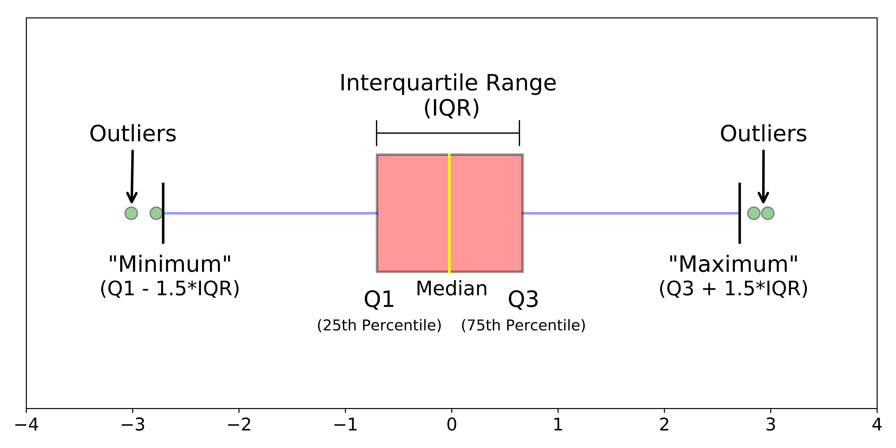

Quality
Our data can have a lot of problems associated with it:
- noise and outliers
- missing values
- duplicates
- inconsistencies
This problem must be resolved or mitigated before we can work with the data.
Noise
We define noise as the modification of the original value (Inherent error ). For example, transmission may have noise that modifies the curve associated with the transmission
Outliers
We can have data characteristics that are different from most of our dataset. They can be noise related or may represent rare events. Example:
| Temperature | outlier |
|---|---|
| 15 | no |
| 20 | no |
| 18 | no |
| 25 | no |
| 100 | yes |
Outliers are often identified with a box plot: 
Missing values
Possible reasons:
- data not collected
- information is not applicable
Management of missing values:
- do not consider object with missing values
- use a default or an estimate value
- ignore it
- insert all possible values weighted with possibility
Duplicate data
they can be generated by mixing different sources. A difficult data cleaning process is needed